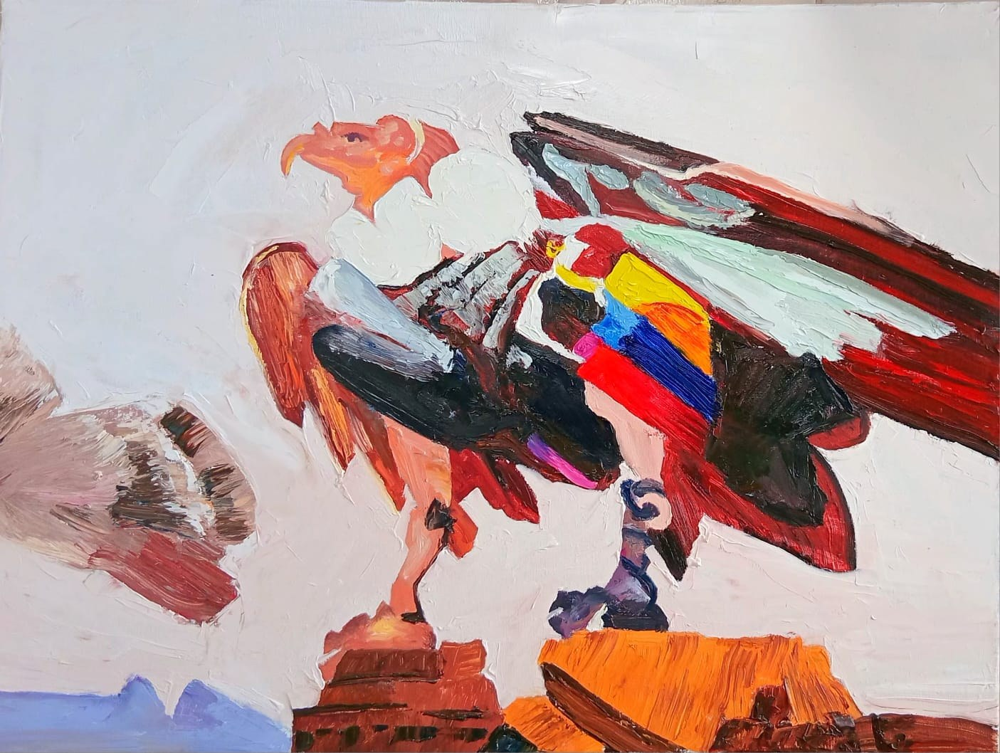
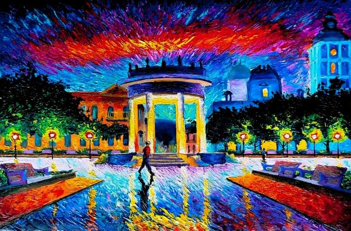
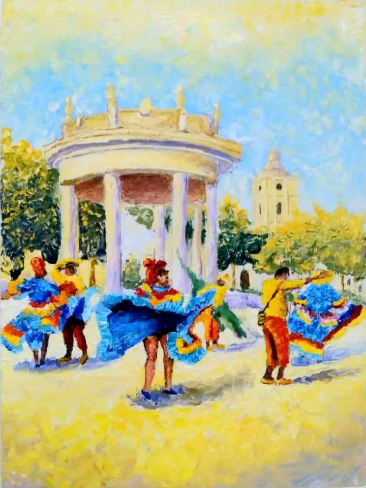
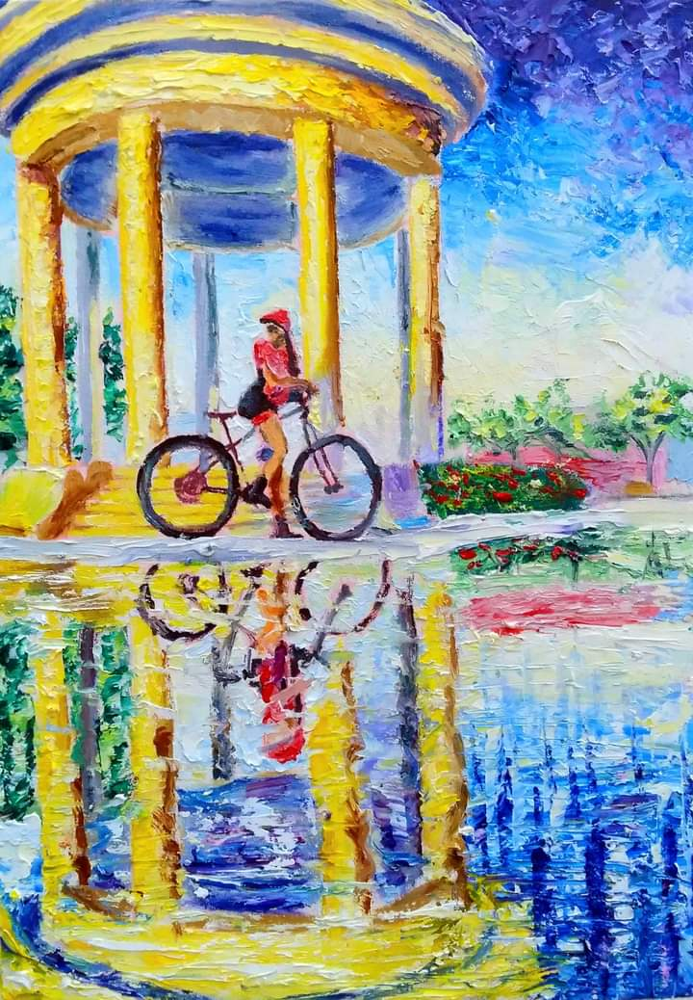
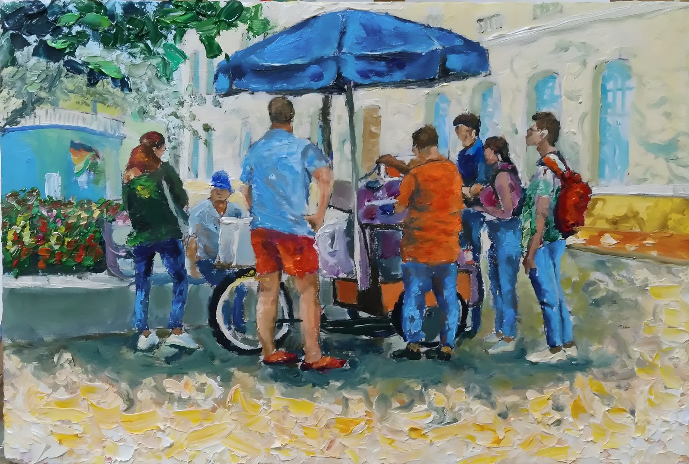
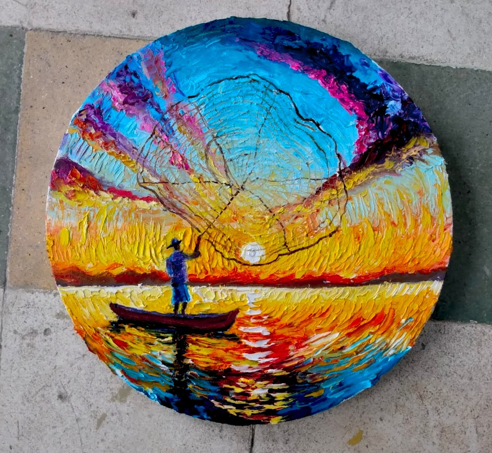
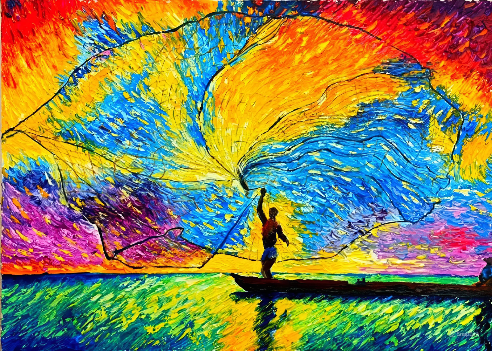
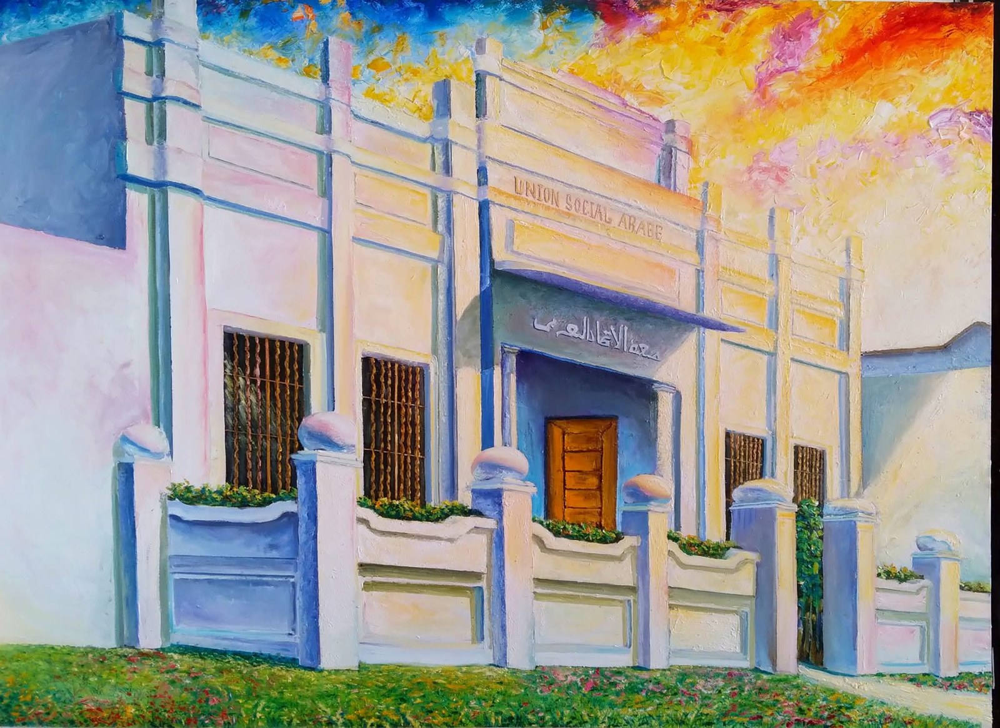
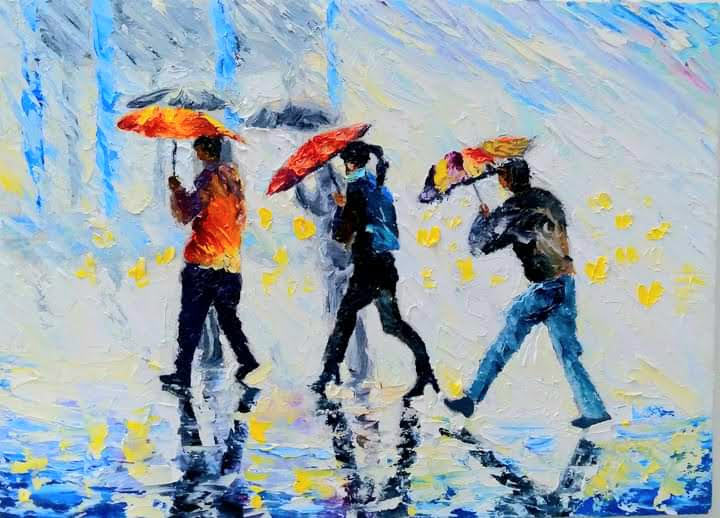

I am Yeiner Alberto Mendoza Lara
Ciénaga, Magdalena, Colombia
I am Yeiner Mendoza (Ciénaga, Magdalena, 1981), an Impressionist visual artist and creator of live artistic experiences. My work is shaped by a deep generational legacy that has nourished my sensitivity and my connection with art. I am the son and also the student of the master of Primitivist painting Pedro Mendoza (R.I.P.), a fundamental influence on my artistic training.
From an early age I showed a strong inclination for drawing, developing my artistic language in a self-taught way. In January 2017 I formally began my path in painting, initially exploring Surrealism with works of great chromatic richness that quickly caught the public's attention.
That same year I took part in the exhibition “Letras y Pinceladas Nacientes”, organized by the Fundación Museo de Arte Contemporáneo de Ciénaga, where my work was widely praised. From then on, I adopted the Impressionist style as my main language, consolidating a proposal centered on light, color, and emotion.
I have taken part in various group exhibitions, including those at the Municipal Mayor's Office of Ciénaga in November 2018 and January 2021, strengthening my presence in the local cultural scene.
My work has been notably well received, extending throughout Colombia and abroad, with a presence in countries such as Canada, the United States, France, Switzerland, Italy, Germany, and Brazil. In March 2025, I had the opportunity to present a pictorial exhibition in the Vatican, an experience that reaffirmed the reach and international projection of my work.
Today, I bring together my pictorial career and the creation of live artistic experiences, where art transcends the canvas and becomes a space of encounter, participation, and shared memory.
For me, painting is not just technique: it is observing, researching, interpreting, and communicating what makes a place special, preserving its cultural identity and connecting people with the territory. I paint in oil, in modern Impressionism, with a palette knife. My identity is deeply tied to the territory of the Colombian Caribbean: its light, its colors, its culture, and the memory of its people.
My work is not only to be contemplated… it is to be lived.
Yeiner Alberto Mendoza Lara
Professional email: yeinermendozaarte@gmail.com
Ciénaga, Magdalena, Colombia
My works are held in collections in Colombia and abroad: Canada, the United States, France, Switzerland, Italy, Germany, and Brazil.
“El Arte de Crear Recuerdos” — my participatory live-painting show. During the event I create an original large-format artwork (100 cm × 70 cm), inspired by a theme previously chosen by the hosts.
Guests are not just spectators: they become co-creators of the work, guided by me at all times, with a harmonious aesthetic result of high visual value.
It includes a large-format canvas, complete materials, professional artistic direction, interaction with the guests, and a finished work as an exclusive keepsake. Events: weddings, birthdays, farewell parties, anniversaries, corporate events, and hotel activations.
This experience reflects my profile as a cultural manager: for me, art is a space of encounter, participation, and shared memory, beyond the individual canvas.









I am Yeiner Alberto Mendoza Lara
Visual Artist · Impressionist Painter
Ciénaga, Magdalena, Colombia
Professional email: yeinermendozaarte@gmail.com
This dossier presents a selection of my works and projects, for exhibitions, cultural management, and collaboration. The year shown in each entry is the year the work was created, which coincides with the year it was published.